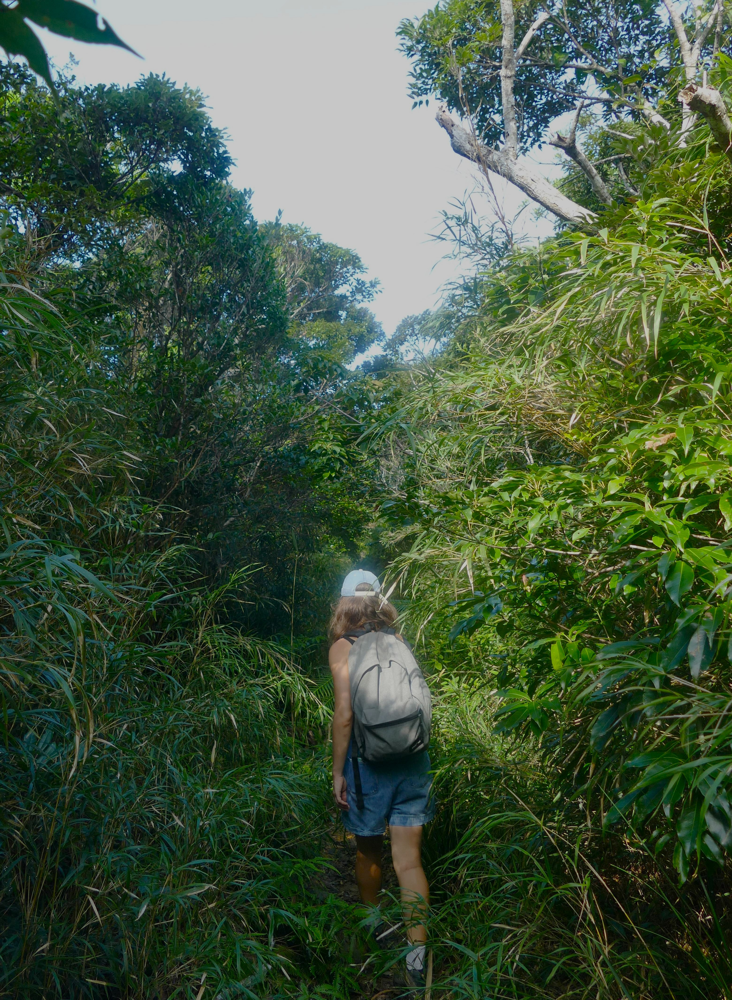
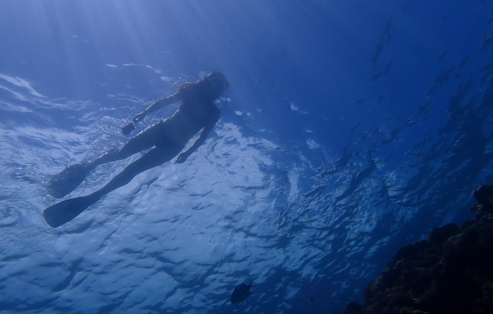

Hello! I’m Solène, and this is my personal website where I showcase my work and CV. You can contact me by email at solenebourdas@gmail.com.
I graduated with a Bachelor’s degree in Biology in 2019 from Université Paul Sabatier (France), and a Master’s degree in Evolutionary Biology in 2022 from the Université de Lille (France). During my studies, I had the opportunity to complete several internships in international research institutions in the UK, Germany, the United States, and Japan.
My research interests are broad, with a focus on palaeontology, especially the paleoecology of invertebrate organisms. I particularly enjoy and have experience using virtual approaches such as 3D modelling, CFD, and imaging techniques like CT scanning to investigate different paleontological and biological systems. Through these methods, I aim to better understand the evolution of organisms and their environments, and to draw connections with modern environmental challenges. Feel free to explore my CV and Research sections for more details about my work!
I enjoy working in collaborative and interdisciplinary environments. I’m also passionate about science communication, combining my scientific background with artistic and 3D skills to make science more accessible and engaging for a wider audience. Outside of research, I enjoy creating, spending time in nature, and exploring new places. I’m always up for new adventures! You can also visit my Gallery section to discover more about my creative projects and photography.
I am currently seeking opportunities such as a PhD or research assistantship. I’m open to exploring a wide range of research topics. Please feel free to get in touch!